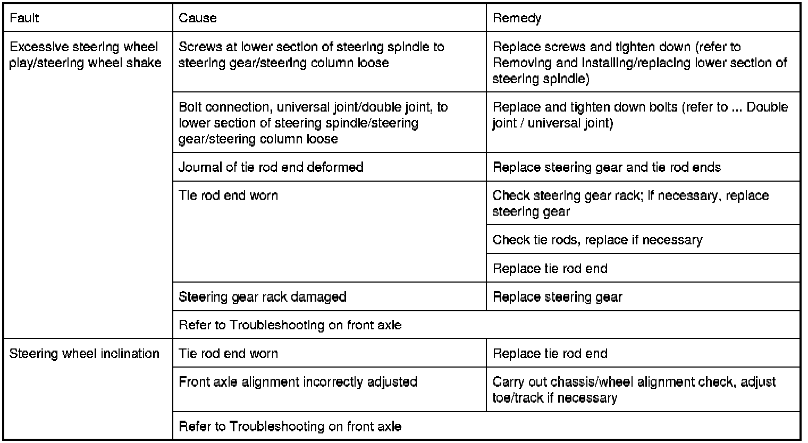

Operation CHARM
: Car repair manuals for everyone.
Home
>>
BMW
>>
2007
>>
X3 3.0si (E83) L6-3.0L (N52K)
>>
Repair and Diagnosis
>>
Steering and Suspension
>>
Steering
>>
Testing and Inspection
>>
Symptom Related Diagnostic Procedures
Symptom Related Diagnostic Procedures
32 90 ... - Troubleshooting on
steering
Observe troubleshooting on front axle and diagnosis help for
steering
(SI)
Front Axle Troubleshooting
.
